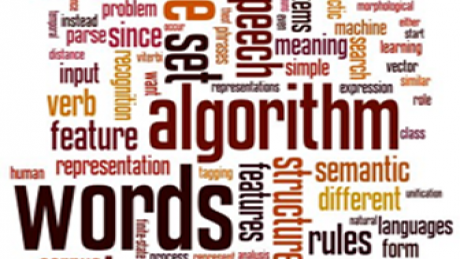
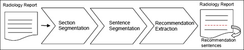
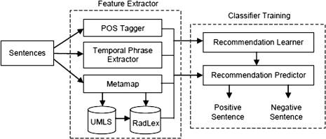

A text processing pipeline to extract recommendations from radiology reportsby Yetisgen-Yildiz et. all

Summary of article
Text processing approach based on natural language processing (NLP) and machine learning to identify sentences that involve clinically important recommendation information in radiology reports
Existing methods
MedLEE
- Extracts and structures clinical information from radiology report text
- Translates clinical information to terms in a controlled vocabulary
- Translates clinical information accessed by further automated procedures
SAPPHIRE
- Matches text to concepts in the Unified Medical Language System (UMLS) Metathesaurus
- Indexes radiology reports automatically
- Develop clinical image repositories that can be used for patient care and medical education
- Note: One of the precursors to MetaMap
Lexicon Mediated Entropy Reduction (LEXIMER)
- Identifies reports that include clinically important findings and recommendations for subsequent action
- Black box approach
Pipeline

Disclaimer: I will use the word feature over and over again in explaining; this just means variable in Bioinformatics speak.
Section segmentation
- Divides radiology report into 11 main sections
- Classifier operates at line level instead of sentence level since content of clinical records tends to be fragmentary and list based.
Pre-processing step: Create list of sections by randomly selecting small subset of reports
- Construct ontology of section categories
- Randomly select reports from corpus
- Annotate section boundaries
- Assign each section a category from ontology
- Group sections:
- Similar sections together
- Rare sections in catch-all category
First step post-processing: Section Segmentation
- Label each line with text and tag features:
- B (beginning of section)
- I (inside of section), or
- O (outside of section) tags
- Unlabeled sections passed on to second step (Section Classification) and labeled with section category according to features
Table 1: Section Segmentation
| Type | Features |
|---|
| Text features | isAllCaps, isTitleCaps, containsNumber, beginsWithNumber, numTokens, numPreBlanklines, numPostBlanklines, firstToken, secondToken, unigram |
| Tag features | prevTag, prevTwoTags, tagChainLength |
Second step post-processing: Section classification
- Label each section with section category using Header, Body, and Tag features
- Some methods used:
- Classification: Maximum Entropy(MaxEnt) models
- Finding good tag sequence: Beam search
- L-BFGS parameter estimation and Gaussian prior smoothing: MALLET toolkit
- Measure overall performance with 5-fold cross validation
Table 2: Section Classification
| Type | Features |
|---|
| Header features | Same as Text features, only the header line is used |
| Body features | avgLineLength, numLines, docPosition, containsList, unigram |
| Tag features | prevTag, tagHistUnigram, tagChainLength |
Sentence segmentation
chop text out into individual sentences to be able to identify individual sentences as
positive or
negativeIdentify boundaries of sentences in section bodies using OpenNLP sentence chunkerRecommendation Extraction

Goal: label each sentence as positive or negative recommendation sentence
Creating feature vector
A
feature vector is created based on the characteristics and content of the sentences in the report, and includes:
Table 3: Feature Vector
| Category | Feature Type | Type of variable | Dimension |
|---|
| Baseline (B) | unigram | string | num of words |
| Ngram (N) | bigram | string | num of bigrams |
| Ngram (N) | trigram | string | num of trigrams |
| Syntactic (S) | tense | categorical | num of tenses |
| Syntactic (S) | stemmedVerb | string | num unique stemmed verbs |
| Syntactic (S) | includesModalVerb | binary | num sentences |
| Syntactic (S) | includesTemporalPhrase | binary | num sentences |
| Knowledge (K) | UMLSConcept | binary | num UMLS concepts |
| Structural (St) | sectionType | binary | num section types |
|
Explanation of variables:
- Baseline: Unigrams, single words.
- Ngram: Bigrams & trigrams, i.e. sequence of two and three words.
- Syntactic: Part of speech tags defined by passing unigrams into Stanford POS tagger. The following features (variables) are then created:
- tense: Tense of a sentence (past, present, future, past-participle etc.)
- stemmedVerb: Strips away the tense of a verb to give only the central meaning. Done by passing features of verbs into Porter Stemmer
- includesModalVerb: Whether a sentence contains a Modal Verb, (e.g. "might", "may","shall")
- includesTemporalPhrase: Whether a sentence contains a Temporal Phrase, (e.g. "for 15 minutes", "December 2012")
- Knowledge-based: UMLS concepts (medical terms) are extracted from report text through processing with MetaMap (a tool created by NLM) to map strings in free text to biomedical concepts in database. Synonymous concepts are grouped together with Concept Unique Identifier (CUI).
- UMLSconcept: Matrix of indicators of UMLS concepts
- Structural: Each of the 11 sections is labelled and every line is matched to a section.
- sectionType: Matrix of indicators of whether line is in particular section (e.g. background, findings).
Classifier training
Model Selection
Feature set size and type selection (subset selection).
Problem: Model too sparse.
Goal: Select most predictive variables to incorporate in final model.
Steps:
- Code distinct features to create huge design matrix.
- Stepwise variable selection to select number of variables (N) for baseline (unigrams).
- Stepwise variable selection to select combination of features.
- Rank features using 5-fold cross validation using F-score.
Results:Unigram (N=200) has highest F-score, so use that as baseline. Baseline+Syntactic and Baseline+Structural both give slightly improved predictability.
Data imbalance experiments
Problem: Proportion of positive: negative sentences is very low (1:165).
Goal: to select a ratio of positive: negative sentences that gives the optimal recall, precision & f-score.
Steps:
- Create feature vector for each sentence.
- Train 165 classifiers, each with ratio of i:1 negative: positive sentences, i = 1 to 165.
For training fold, all positive sentences are used, while negative sentences are randomly selected to give the ratio i:1
For test fold, all negative sentences are included (all 165 exp have same test set)
Results: When sets are balanced, recall is high, precision is low. As i increases, recall decreases, precision increases slowly. i = 44 has most balanced precision & recall while i = 9 has highest F-score.
Error Analysis
- 5-fold cross validation (few positive sentences)
- Criteria used include: false positives, false negatives, precision, recall, F-score